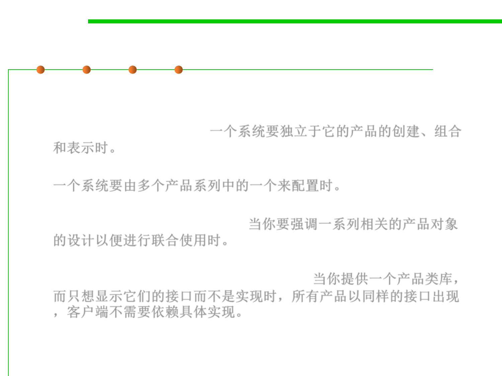

Abstract Factory pattern
6.2 Design Patterns for Maintainability
▪ Applicability
– A system should be independent of how its products are created,
composed, and represented.一个系统要独立于它的产品的创建、组合
和表示时。
– A system should be configured with one of multiple families of products.
一个系统要由多个产品系列中的一个来配置时。
– A family of related product objects is designed to be used together, and
you need to enforce this constraint.当你要强调一系列相关的产品对象
的设计以便进行联合使用时。
– You want to provide a class library of products, and you want to reveal
just their interfaces, not their implementations 当你提供一个产品类库，
而只想显示它们的接口而不是实现时，所有产品以同样的接口出现
，客户端不需要依赖具体实现。